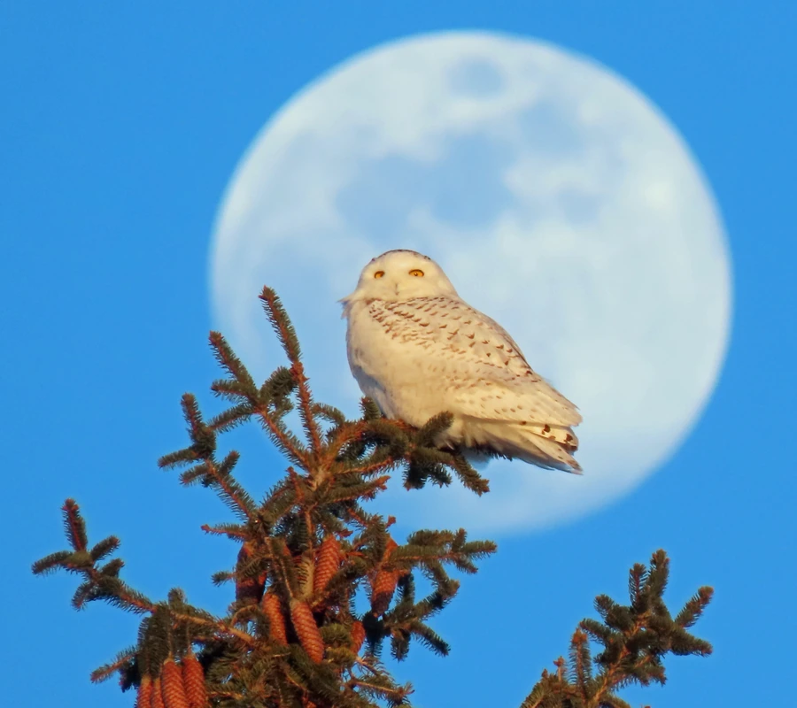

鸟类 · 动物界
雪鸮 Bubo scandiacus

北极苔原的白色猛禽，雄鸟几乎通体雪白，白天也能狩猎，因《哈利·波特》中的海德薇而广为人知。
- 分类
- 门脊索动物门纲鸟纲目鸮形目科鸱鸮科属雕鸮属
- 栖息环境
- 环北极苔原、海岸荒原与开阔农田，冬季出现在草原、机场和农田等开阔地带
- 地理分布
- 环北极苔原繁殖，冬季南迁至北美、欧洲和亚洲温带，中国北方偶见越冬
- 保护级别
- IUCN 易危（VU）；中国国家二级保护动物
物种志
雪鸮体长 52–71 cm，翼展 125–160 cm，体重 1.3–3 kg，雌鸟比雄鸟略大。雄鸟羽毛几乎纯白，随年龄增长白斑逐渐减少；雌鸟和幼鸟为白色底子上密布黑褐色横斑。它头部圆润，没有明显的耳羽簇，一双黄色的眼睛在白色面盘上十分显眼。
雪鸮在环北极的苔原上繁殖，从加拿大、阿拉斯加、格陵兰到北欧和俄罗斯北部都有分布，冬季南迁至温带的开阔地带，中国东北、内蒙古和新疆偶有越冬记录。它的食谱以旅鼠为主，也捕食田鼠、鸟类、鱼和野兔；旅鼠数量多的年份，雪鸮会相应多产卵。它们在苔原地面凹坑中营巢，每窝 3–11 枚，孵化 31–33 天。由于气候变化和食物波动，雪鸮被列为易危物种，中国将其列为国家二级保护动物。
形态与习性
- 食性旅鼠为主，兼食田鼠、鸟类、鱼和野兔
- 体长52–71 cm
- 翼展125–160 cm
- 体重1.3–3 kg，雌鸟偏大
- 繁殖每窝 3–11 枚，孵化 31–33 天
- 寿命野外约 10 年，圈养可超过 25 年
- 迁徙冬季南迁，中国东北、内蒙古和新疆有越冬记录
趣味知识
- 雪鸮是少数白天也活动的鸮类，北极夏季的极昼让它练就了昼间狩猎的本领。
- 雄鸟年龄越大羽毛越白，完全纯白的个体通常是年长的雄鸟。
- 雪鸮的繁殖数量取决于旅鼠数量，旅鼠多的年份每窝可产 10 枚以上。
- 《哈利·波特》里雪白的海德薇让雪鸮成为全球最知名的猫头鹰之一。